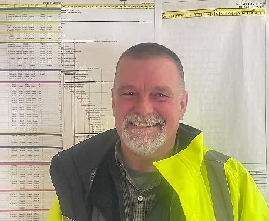

With more than 45 years of experience in the design and construction of public and commercial projects, Suresh brings a global perspective and deep technical expertise to his role as Project Director. His career spans multiple continents and project types, with the past two decades focused primarily on the public sector — including schools, public safety facilities, civic buildings, libraries, parks, playgrounds, and municipal infrastructure. Suresh’s background as a general contractor, estimator, and Owner’s Project Manager provides him with a comprehensive understanding of every phase of project delivery. A respected mentor and leader, he is known for fostering collaboration, guiding teams with clarity and purpose, and empowering others to deliver their best work. His steady leadership and unwavering dedication to client satisfaction consistently bring projects to successful completion — often exceeding expectations and strengthening long-term client relationships. At Atlantic, we focus on what we do best: leading the process, managing the team, and protecting our clients’ interests. Free from conflicts of interest, our approach is collaborative, transparent, and driven by results. We believe successful projects are built on trust, integrity, and partnership — values that guide every project we deliver and every relationship we build.
Jennifer brings over 20 years of experience in the design and construction industries, specializing in public sector projects. Before joining ACMI, she spent 14 years with a multi-disciplinary design and project management firm, where she oversaw both design and OPM projects from concept through completion. Her experience includes serving as Project Manager and Contract Administrator for numerous cities, towns and state agencies and authorities throughout the Commonwealth. Jennifer is highly skilled in Massachusetts public procurement laws, contract negotiations, budget development, and multi-discipline coordination. Known for her approachable demeanor and trustworthy leadership, she fosters open communication and maintains her clients’ confidence throughout every phase of a project. Her commitment to collaboration and client satisfaction consistently leads to successful outcomes and enduring relationships.

Steven brings over 30 years of experience in the construction industry, including extensive work as a site superintendent and self-employed carpenter before transitioning to his role as an on-site project representative. His deep understanding of construction means and methods, combined with a strong knowledge of Massachusetts State Building Codes and meticulous attention to detail, makes him a trusted presence on any job site. Known for his practical insight and problem-solving skills, Steven serves as an effective intermediary between contractors, design teams, and owners. His proactive approach to identifying and resolving on-site challenges helps keep projects on track and ensures high- quality results.